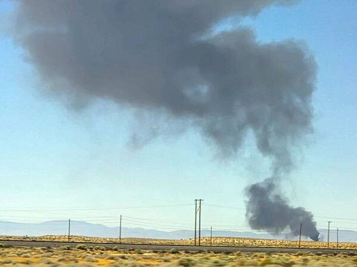

Eight people were killed when a B-52 bomber jet crashed during a test flight in California, the US Air Force said on Saturday. The crash occurred on Friday at around 11:00 a.m. local time (1800 GMT) near the city of Palmdale, about 60 miles north of Los Angeles, according to the Air Force. The B-52 Stratofortress is a long-range, subsonic, jet-powered strategic bomber that has been in service since the 1950s. It is used by the US Air Force for a variety of missions, including nuclear deterrence, conventional bombing, and reconnaissance. The Air Force said that the crash was under investigation and that the cause was not yet known. The names of the victims have not been released. The crash of the B-52 bomber is a tragic reminder of the risks involved in military aviation. The Air Force has a long history of accidents and incidents involving its aircraft, and it is important that the causes of these incidents are thoroughly investigated to prevent future tragedies.
The crash occurred within the perimeter of the base in the Mojave Desert, about 95 km north of Los Angeles.
After reviewing footage from the scene, officials determined that the crash was “tragic and unsurvivable”, Hayes said. Those on board included military personnel, government civilians and government contractors, CNN quoted Chief Master Sergeant Joshua T Skarloken as saying. Boeing later confirmed that two of its employees were among those killed and said it was in contact with their families. Footage from the scene showed a large plume of black smoke rising from a charred area near the runway. The identities of those killed were not released as officials were still in the process of notifying their next of kin, AFP reported. The cause of the crash remains unknown.
